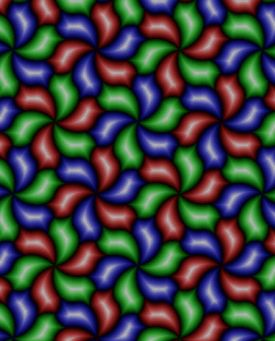

MAF is not the work of a professional mathematician or computer scientist. At the time I conceived the wish for such a library as I described in the preface, I would not even have been able to understand, much less write, much of the material to be presented in this documentation. I had, long ago, learned a little group theory when I studied mathematics as an undergraduate, but my interest in mathematics had only recently been re-awakened, when I became interested in fractals and geometric patterns, after coming across the book Symmetry in Chaos, which had inspired me to write my own computer program for creating similar fractal images. Three years later, in 2002, this new interest had led me to another book, Indra's Pearls, and it was in that book I first encountered the notion of using automata to help with the enumeration of the elements of a group, and thus learned of KBMAG. I was intrigued, because not long before this I had devoted a good deal of effort into enhancing my fractal program with routines to create tilings with the symmetry of any one of the seventeen wallpaper groups, including tessellations exploiting colour symmetries. In case you are unfamiliar with the term, colour symmetries can be viewed as a way to visualise some of the homomorphisms of the wallpaper groups onto permutation groups of small degree, or if you prefer, the cosets of their low index subgroups, (though I did not appreciate either of these viewpoints at the time).
As part of my fractal program I had also needed an easy way to create 3*3 matrices for all the elements of the symmetry group of a dodecahedron. As working that out by hand is rather a daunting challenge, I had contented myself with somehow or other working out the matrices for a generating set, and decided to use an encoded set of words in those generators as a shorthand formula which would enable me to compute the remaining elements. That was my first practical experience of the word problem. I was rather surprised to how difficult it was to work out a set of exactly sixty distinct words. In the end I simply calculated matrices for all words up to some length, discarded words for matrices that I already had (to within rounding error), and stopped when I had sixty words.
I could see that exploiting this idea of automata might have made both these programming tasks easier. Soon I had downloaded KBMAG, and in a short time it was up and running on my Windows PC. At first not much happened. I ran kbprog against some example files a few times, and then rather lost interest - after all my code for tilings was working, if not as elegant as I might have liked, and my main focus was on learning how to draw Kleinian group limit sets. It was to be quite a long time before I came back to automata, because at that time, the groups whose limit sets I wanted to draw were all free groups, which are, unsurprisingly, very easy to enumerate without using automata at all.
Some time later, I once again needed a set of words in generators for some smallish finite groups, and, for whatever reason, once again found it difficult to work out a set of shortest words for all the elements. This time, either my previous approach was no good, or I had acquired sufficient mathematical spirit that I was ashamed to use it. Since I've never liked to rely on methods that I don't understand, I decided to try to write my own program to find an appropriate set of words, but quickly got stuck. It was at that point I realised I needed to look into KBMAG more deeply, and thus through it that I first learned of the Knuth-Bendix completion procedure. I found a description of the procedure on the internet. It didn't sound too difficult to implement, and KBMAG's source code looked intimidating, so I decided to write my own implementation from scratch. Everything seemed to work OK, and I soon had my sets of words. Emboldened by early success I adapted my program (which had the required presentations hard-coded into it) to try some other finite groups. Any programmer knows that it is important to test exceptional cases, so I soon decided to try a presentation of the trivial group. By this time I must have been taking KBMAG a little more seriously, at any rate I had read enough of its documentation to learn that kbprog found the degen4c presentation very difficult, so I put that into my program to see what would happen. When my program proclaimed the group trivial within about fifteen seconds, I certainly felt pretty smug, though I had enough sense to realise that I couldn't rule out a bug: I knew enough to realise that if a bug in my program had created an untrue equation, a very likely result would be the trivial group. So the next thing I did was to write a concrete simulation of the Rubik cube as a permutation group. I used that simulation and my Knuth-Bendix program to come up with a presentation of a largish subgroup of the Rubik cube, and then tried my program on that, making sure every equation my program found was checked by the simulation. (This code is still to be found inside the MAF library today). That test passed, my confidence in my new program increased. I decided to see how kbprog would fare with this presentation. Once again, my program was the clear winner - it was at least ten times faster than kbprog I seem to recall.
For the time being my Knuth-Bendix program was still a minor sideline, though I was glad to have the code available, as I was pretty sure I would need it one day for my fractal program.
Eventually I had mastered enough of Indra's Pearls to draw quite passable limit set images, and I decided to use word-acceptors to enumerate the groups I was drawing, since I was moving on from drawing the limit sets of free groups, and so my Knuth-Bendix implementation was at last incorporated into the fractal program. At first the word-acceptors I needed were all easy to create, because I could find presentations which gave rise to confluent rewriting systems within a second or two at most. However, as time went on I became interested in drawing more complicated limit sets, where the group contains elliptic transformations, either as generators, or as commutators, or perhaps some other "special word". I began to come across groups for which the Knuth-Bendix procedure did not terminate. So I adapted KBMAG's code for building automatic structures for use in my own code. At first I contented myself with running Knuth Bendix for a short time, and then if confluence had not been achieved, I would use the equations I had so far to build a word-difference machine and then an automatic structure. Usually this worked well enough, because most of the groups I was interested in had easy shortlex automatic structures. However, sometimes, my limit set drawing screen saver, which chooses a group to draw using pseudo-random parameters, would freeze: when it picked a group that does not have an easy to find automatic structure. I decided that the best way to avoid this kind of trouble was to ensure that my automatic structure building program should perform well on as wide a range of group as possible, so I began to look at some more of the example files that come with KBMAG. At first I would hard code these directly into my Knuth-Bendix program. Since that soon became tedious, I made my library support KBMAG input files directly, and since I wanted to be enable to check my results against KBMAG, its output files as well.
Soon, I had reached the stage where my automata building code could cope well with many KBMAG input files, but there were several files it could not deal with at all. I took the fateful decision to suspend work on my limit-set program for what I thought would be about three months, and to make my automata building code into a separate package, which my fractal programs could use, and which I decided to call MAF, and which I originally intended to be roughly equivalent to autgroup and kbprog combined.
By the end of the three months, I had almost forgotten about fractals, and getting more and more interested in MAF for its own sake. I was enjoying blinding my non-mathematical friends with science, trying to explain what I had been up to, talking about word-difference machines, general multipliers and so on. Several times I made drastic alterations to MAF's architecture.
Six months later, in March 2007, MAF was starting to resemble its present form. By now it could find automatic structures or confluent rewriting systems for almost all the KBMAG example files. Only two, plesken2, and conder were still beyond it. I decided to write to Derek Holt, to tell him what I was up to, and to ask him about these two groups. It turned out that he didn't think KBMAG had managed plesken2 either, but that the reason MAF could not do conder was because I had only supported "shortlex" word-ordering. So I decided to enhance MAF so that it supported a range of word-ordering methods. At first, as with KBMAG, it was still restricted to using "shortlex" ordering when building automatic structure, but eventually I decided to support other orderings in this part of the code too, so I consulted Sarah Rees's paper on the subject. Adding support for all this took up most of the rest of 2007. Also, at some point, I had decided to support coset systems in MAF, and had set myself the challenge of supporting them more fully than did KBMAG. In the end it was not until late in 2008 that MAF was finally ready to be released; my "three month" project had taken me two and a half years to complete (I had been working four or even five days a week on it most of that time, learning much of the theory as I went along). By the time it was released MAF was able to build an automatic structure for plesken2. That is still one of the largest automatic structures MAF has ever computed. About the same time I used MAF to prove that presentation #12, in the series of possible presentations of groups of order 6561, described in "Groups of Deficiency Zero", was in fact a presentation of an infinite shortlex automatic group, which was the first time I had managed to use MAF to resolve what I believed to be an open question.
MAF's initial release did not attract much attention, and I finally went back to developing my fractal program for a while. Then, in August 2009 Derek Holt asked me to try MAF out on a number of presentations, and one of them, <a,b | a^3=b^5=(a*b)^7=Comm(a,b)^2=1>, it was able to settle within a few hours, an achievement which was to lead to MAF being cited in a journal article for the first time. Following on from that I decided to do more work on MAF, and for much of the last 9 months I have been enhancing MAF in various ways. Recently I have become interested in investigating coset enumeration as an alternative to the Knuth-Bendix procedure, and so MAF now contains a coset enumerator as well. It is very likely that I shall one day try to make this compatible with ACE.